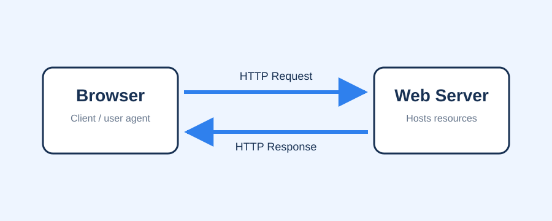

Key Terms
- Client
- Server
- Request
- Response
- Status Code
- HTTPS
An IT 3203 research website about the protocol that powers web communication.
HTTP, or Hypertext Transfer Protocol, is the set of rules that allows browsers and web servers to exchange information. Every time a user opens a website, submits a form, loads an image, or watches a video online, HTTP helps organize the request and response process. This site introduces HTTP, explains how it has evolved, and highlights why it remains important for modern web development.
The goal of this project is to present research in a clear website format using HTML and CSS. This first milestone focuses on structure, clean design, and basic content that can be expanded in later milestones.
This website focuses on how HTTP supports web browsing, APIs, performance, security, and the structure of modern web communication.
